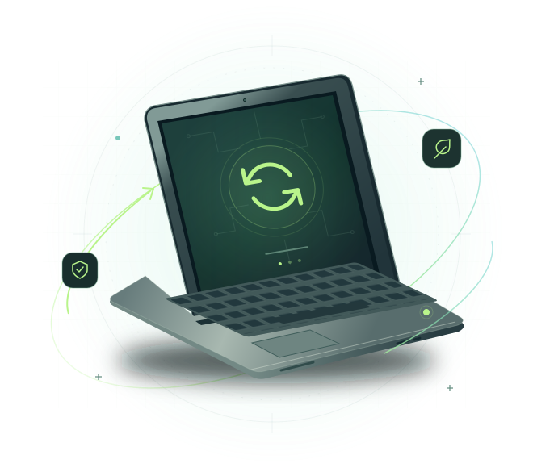

01
Unused Devices
Upgrades happen. Old laptops end up in drawers and storage rooms, with useful life still in them.
A SECOND LIFE. A NEW POSSIBILITY.
That laptop in your drawer still has a future. We’re building a way to collect, securely wipe, and restore unused computers—then put them in the hands of people who need them.
Less waste. More connection. A better next chapter.

THE DISCONNECT
Somewhere, a computer sits unused.
Somewhere else, someone
needs one.
We see an opportunity to connect the two.
Upgrades happen. Old laptops end up in drawers and storage rooms, with useful life still in them.
When usable technology gets discarded, valuable materials—and possibilities—go to waste.
A reliable computer opens doors to learning, work, and connection. For many, it’s still out of reach.
A SIMPLE IDEA. A THOUGHTFUL PROCESS.
Four steps to give your old technology a new purpose.
Give unwanted laptops and computers a place to go.
IT STARTS WITH YOUSecurely erase previous-owner data before a device moves on.
PRIVACY COMES FIRSTInspect, clean, repair, and refurbish devices with life left in them.
A LITTLE CARE GOES FARPlace working technology with students, families, and neighbors.
THE NEXT CHAPTER BEGINSCan’t be restored? Devices would be directed to responsible electronics recycling.
SMALL ACT. REAL POSSIBILITY.
More useful years for technology.
More possibilities for
people.
That’s the future we’re working toward.
Keep usable devices in circulation and valuable materials out of the waste stream.
Help more students, families, and community members access reliable technology.
A first résumé. An online class. A new skill. The right tool can be the start of something bigger.
FOR ORGANIZATIONS
Your next upgrade could be someone else’s fresh start. We’re seeking local organizations to help shape a simpler, more meaningful way to retire computers.
A better next step for your retired tech.
THE FUTURE WE SEE
We believe useful technology should keep doing useful things.
Our vision for BYU ByteBack, a proposed student initiative.
LET’S GIVE GOOD TECH A FUTURE
Have a device to donate? Interested in partnering or volunteering? Tell us how you’d like to be part of the idea.
One device, a room full of computers, or a little of your time. There’s a place for you here.
Independent academic prototype. BYU ByteBack is not affiliated with Brigham Young University. Requests are saved only in this browser; nothing is sent to a team.
A FIRST STEP TOWARD SOMETHING GOOD
Thanks for exploring BYU ByteBack. This prototype recorded your request locally in this browser. It was not transmitted, and no one will contact you from this submission.
A LITTLE MORE CLARITY
Here’s how we’re thinking about
the details.
The MVP supports laptops, desktops, and tablets, including working devices and devices needing repair. Try the donation app to select devices, choose a handoff, and track an order. Local demo mode does not arrange physical collection.
Secure data erasure is a core part of our proposed process. Previous-owner data would be erased before any device is redistributed. Detailed handling and verification procedures would be established before accepting devices. Back up your files and sign out of your accounts before a future donation.
Devices that cannot be safely and reliably restored would be directed to responsible electronics recycling. We would prioritize reuse wherever practical and establish recycling arrangements before collection begins.
The MVP is designed for Provo-area college students. Browse the computer catalog and reserve a device for local pickup. Sample inventory and reservations in demo mode are for testing; no physical devices or payments are exchanged.
No. This is an independent student project, not an official BYU organization or program. BYU ByteBack is a proposed business created for an academic assignment. It is not affiliated with, sponsored by, or endorsed by Brigham Young University.
THE NEXT CHAPTER STARTS WITH YOU
Your unused device could become someone else’s opportunity.